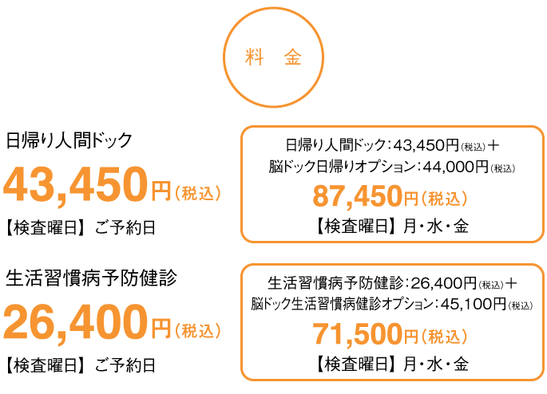
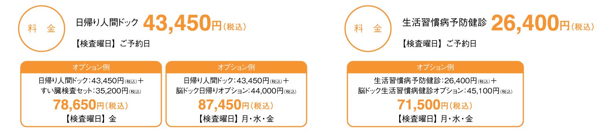

日帰り人間ドック
日帰り人間ドッグについて
生活習慣病は悪い日常生活の積み重ねが主な原因で発症します。長い年月の間に徐々に進行し、発病すると完治することがきわめて困難な病気です。早期発見・早期治療が生活習慣病対策の決め手です。日帰りドックは宿泊ドックまで受ける時間のない多忙な現代人にマッチした総合健診です。多項目にわたり詳しい検査を実施し、多くの疾病の早期発見に効果があります。
 ※オプションのキャンセル料/7日営業日前から 5,000円 ※いずれも、土日祝・年末年始を含まない日数
※健診結果は通常4週間後にご指定の場所へ郵送いたします。検査項目によっては、4週間以上お時間をいただく場合があります。
※日帰りコースはオプションを含めて全ての健診結果は郵送での通知のみになります。
検査項目
| 検査項目 | 内 容 | |
|---|---|---|
| 計測 | 身長・体重・標準体重・BMI・腹囲測定 | |
| 一般化学 | 白血球・赤血球・ヘモグロビン・ヘマトクリット・血小板数 | |
| 生化学一般 | 肝その他 | 総蛋白・ALP・ＡＳＴ・ALT・LDH・総ビリルビン・直接ビリルビン・A/G比・γ-GTP・ALB |
| 膵 | 血中アミラーゼ | |
| 痛風 | 尿酸 | |
| 腎 | 尿素窒素・クレアチニン・eGFR | |
| 脂質 | 総コレステロール・中性脂肪・HDLコレステロール・LDLコレステロール | |
| 血清 | CRP・CEA・CA19-9 | |
| 循環器系 | 血圧・心電図 | |
| 尿検査 | 蛋白・糖・潜血・沈渣 | |
| 糖尿病 | 空腹時血糖・HbA1c | |
| 腹部エコー | 肝臓・胆のう・胆道・膵臓・腎臓・脾臓 | |
| 消化器系 | 胃透視または上部消化管内視鏡検査（指定曜日あり）・便2回法 | |
| 呼吸器 | 胸部レントゲン | |
| 眼検査 | 視力・眼底カメラ | |
| 聴力 | オージオメーターによる検査 | |
| その他 | 医師による問診 | |
※乳がん・子宮がん検査は、別途追加料金が必要です。 ※上部消化管内視鏡検査は、別途 5,500円（税込）が必要です。
健診当日の上部消化管内視鏡のキャンセル、または日程変更は2,000円の手数料をいただきます。
| 検査項目 | 内 容 | |
|---|---|---|
| 計測 | 身長・体重・標準体重・BMI・腹囲測定 | |
| 一般化学 | 白血球・赤血球・ヘモグロビン・ヘマトクリット・血小板数 | |
| 生化学一般 | 肝その他 | ALP・ＡＬＴ・AST・γ-GTP・総ビリルビン・LDH・総蛋白 |
| 痛風 | 尿酸 | |
| 腎 | 尿素窒素・クレアチニン・eGFR | |
| 脂質 | 総コレステロール・中性脂肪・LDLコレステロール・ＨＤＬコレステロール | |
| 循環器系 | 血圧・心電図 | |
| 尿検査 | 蛋白・糖・潜血・沈渣 | |
| 糖尿病 | 空腹時血糖 | |
| 消化器系 | 胃透視または上部消化管内視鏡検査（指定曜日あり） | |
| 呼吸器 | 胸部レントゲン | |
| 眼検査 | 視力 | |
| 聴力 | オージオメーターによる検査 | |
| その他 | 医師による問診 | |
※乳がん・子宮がん検査は、別途追加料金が必要です。 ※上部消化管内視鏡検査は、別途 5,500円（税込）が必要です。
健診当日の上部消化管内視鏡のキャンセル、または日程変更は2,000円の手数料をいただきます。